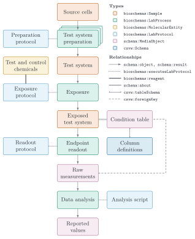

This profile extends the ISA RO-Crate profile (ISA RO-Crate Profile, originally produced by NFDI4Plants) with the entity types needed to describe experimental in vitro toxicology studies and New Approach Methodologies (NAMs).
It is the domain layer of a three-layer architecture: the base RO-Crate
layer provides a portable, self-describing data package on Schema.org; the
ISA RO-Crate Profile provides the structural Investigation → Study → Assay hierarchy with experimental steps
modelled as Bioschemas LabProcess / LabProtocol; and this profile adds the
toxicology-specific, ontology-backed requirements on top.
The extension is additive and reuse-first: each concept is expressed through the most specific applicable
Schema.org or Bioschemas type, refined where necessary by an existing
ontology term: a step by the protocol type of the record it executes, a test-system source by its sampleType. Test/control chemicals are
bioschemas.org/MolecularEntity instances; the test system is a
Sample carrying sampleType — a cell line, primary cells, an organoid or other 3D model, a tissue
or organ fragment, a sub-cellular fraction — of which cell lines and primary cells carry requirements of their own
here; and the experimental workflow is a chain of
LabProcess steps discriminated as TestSystemPreparation, Exposure, EndpointReadout, and DataAnalysis.
Requirement levels use RFC 2119 keywords, as recommended by the RO-Crate 1.2
profile conventions: MUST (required for conformance), SHOULD (recommended; absence is reported as a warning), and
MAY (optional). The shapes are open-world: a property this profile does not name is neither checked nor
forbidden (no shape declares sh:closed), so a crate may carry further metadata without affecting conformance.
The figure below is the model of an in vitro NAM study in terms of this profile's entity types: box colour gives
the type, line style the relationship. Each material is a Bioschemas Sample, each step a LabProcess following a
LabProtocol, and the chemicals a MolecularEntity.

How the reference builder encodes this. The tables below give the canonical property names and expected types (what the SHACL shapes check). The
vitro-cratebuilder emits them through compact JSON-LD aliases defined in the crate's@context, all RDF-identical to the canonical predicates:
@typeis the bare token (Sample,LabProcess,LabProtocol,PropertyValue, …); the@contextexpands it to the Bioschemas/schema.org IRI named in the tables.- process parameters appear under
parameter(→schema:additionalProperty), inputs underinput(→schema:object), outputs underoutput(→schema:result), andderivesFromexpands toschema:isBasedOn.- the AOP links are written as
aopon a Study andkeyEventon an Assay, both expanding toschema:mentions, and a compound's hashed structure asinchikey(→schema:inChIKey).- each
parameteris aPropertyValuenode with a deterministic@id, apropertyIDIRI and optionalunitText— never an inline literal (the LabProcess shapes usesh:class schema:PropertyValue).- a derived
Sample'sderivesFromlinks the Sample it was made from; only cultured material is constrained: at most one parent Sample, or two or more for a co-culture.The four LabProcess shapes are selected by the
intendedUseof the protocol record a step executes: a term of the test system preparation types set, treatment protocol EFO:0003969, assay protocol BAO:0000523, data transformation OBI:0200000. ALabProcesswhose record carries none of these is targeted by no tox shape and is checked only by the base + ISA layers, and a type outside the list is a warning.
A crate following this profile declares conformance using the RO-Crate 1.2 convention: the
RO-Crate Metadata Descriptor's conformsTo carries only the single base-specification URI, while the
profile URIs the crate targets are declared on the Root Data Entity (./). Each referenced profile is
also declared as a Profile contextual entity.
{
"@id": "ro-crate-metadata.json",
"@type": "CreativeWork",
"conformsTo": {"@id": "https://w3id.org/ro/crate/1.2"},
"about": {"@id": "./"}
}
The Root Data Entity declares the targeted profiles:
{
"@id": "./",
"@type": "Dataset",
"conformsTo": [
{"@id": "https://github.com/nfdi4plants/isa-ro-crate-profile"},
{"@id": "https://w3id.org/ro/crate/isa-tox/1.0"}
]
}
The ISA layer is declared with the IRI the profile actually extends (see
profiles/shapes/tox/profile.ttl, prof:isProfileOf); a stable w3id.org/ro/crate/isa/…
permalink is not yet registered. The referenced profiles are declared as contextual entities:
{
"@id": "https://github.com/nfdi4plants/isa-ro-crate-profile",
"@type": ["CreativeWork", "Profile"],
"name": "ISA RO-Crate Profile"
},
{
"@id": "https://w3id.org/ro/crate/isa-tox/1.0",
"@type": ["CreativeWork", "Profile"],
"name": "ISA-Tox RO-Crate Profile",
"version": "0.1.0-draft.1"
}
Note — RO-Crate 1.2 placement. RO-Crate 1.2 recommends declaring the profiles a crate targets on the Root Data Entity (
./) and reserving the Metadata Descriptor'sconformsTofor a single base-specification value — which this profile follows.
A machine-readable Profile Crate bundling this description with the SHACL shapes MAY additionally be published at the profile URI; this is planned but not yet provided.
A crate MUST include at least one Exposure that one of its Studies or Assays is about: it is not in vitro toxicology if nothing is exposed to a chemical. The check targets the Root Data Entity, so it holds even for a crate that contains nothing else. Each Exposure's protocol then names its compounds (see LabProcess - Exposure).
Is based on the ISA Study. A study addresses one Adverse Outcome Pathway, referenced via
schema:mentions at the Study level; each of its assays annotates the one Key Event it measures
(Assay - Key Event). The referenced node is the AOP-Wiki entity itself: @id is its
identifiers.org IRI as used in AOP-Wiki RDF (https://identifiers.org/aop/<id>), typed AdverseOutcomePathway
(AOPO, the ontology AOP-Wiki RDF itself uses) and
DefinedTerm, with AOP-Wiki as its term set and the wiki page as url. A crate MAY carry the
surrounding AOP-Wiki subgraph — Key Events (https://identifiers.org/aop.events/<id>) and their
KeyEventRelationship nodes (https://identifiers.org/aop.relationships/<id>), cross-linked by upstream_event /
downstream_event — so the pathway reads without a network call.
The adverse outcome the study is ultimately about is reached through the pathway, via its has_adverse_outcome,
rather than named again on the Study: an adverse outcome occurs in more than one pathway, so the pathway is the more
specific statement and the one the assays' Key Events are steps of.
The rows below are the ISA Study's own, repeated so this profile's requirement levels can be read
in one place; mentions is this profile's addition.
| Property | Required | Expected Type | Description |
|---|---|---|---|
| @id | MUST | Text or URL | Should be a subdirectory corresponding to this study. |
| @type | MUST | schema.org/Dataset | — |
| additionalType | MUST | Text or URL | 'Study' or ontology term to identify it as a Study. It is what selects the entity, so no shape can check it. |
| identifier | MUST | Text or URL | Identifying descriptor of the study. |
| name | MUST | Text | A title of the study. |
| mentions | SHOULD | DefinedTerm | The Adverse Outcome Pathway the study addresses, as its AOP-Wiki node. |
| about | SHOULD | bioschemas.org/LabProcess | The experimental processes performed in this study. |
| creator | SHOULD | schema.org/Person | The performer of the study. |
| dateCreated | SHOULD | DateTime | When the Study was created. |
| datePublished | SHOULD | DateTime | When the Study was published. |
| description | SHOULD | Text | A short description of the study (e.g. an abstract). |
| hasPart | SHOULD | schema.org/Dataset (Assay) or File | Assays contained in this study or actual data files resulting from the process sequence. |
Expected identifier PropertyValue items. Where a study's citation carries its publication's
identifiers, each is a PropertyValue whose propertyID fixes which identifier it is. A shape checks the propertyID
of each.
| name | Required | propertyID |
|---|---|---|
| DOI | MUST if stated | http://purl.obolibrary.org/obo/OBI_0002110 |
| PubMedID | MUST if stated | http://purl.obolibrary.org/obo/OBI_0001617 |
Is based on the ISA Assay. An assay measures one endpoint, annotated with the AOP-Wiki Key Event it
reads out via schema:mentions — the level below the Study's AOP, so a reader can tell which step of the pathway
each assay covers. The referenced node is the AOP-Wiki Key Event itself: @id is its identifiers.org IRI as used in
AOP-Wiki RDF (https://identifiers.org/aop.events/<id>), typed KeyEvent
(AOPO) and DefinedTerm, with the wiki page as url.
What the assay measures is named in BAO terms, the vocabulary this profile uses
throughout for assay description: at this level through measurementMethod and measurementTechnique, and in more
detail on the step that reads the endpoint, whose parameters carry the detection instrument, measured entity and
endpoint as BAO terms (see LabProcess - Endpoint Readout).
The rows below are the ISA Assay's own, repeated so this profile's requirement levels can be read
in one place; mentions is this profile's addition.
| Property | Required | Expected Type | Description |
|---|---|---|---|
| @id | MUST | Text or URL | Should be a subdirectory corresponding to this assay. |
| @type | MUST | schema.org/Dataset | — |
| additionalType | MUST | Text or URL | 'Assay' or ontology term to identify it as an Assay. It is what selects the entity, so no shape can check it. |
| identifier | MUST | Text or URL | Identifying descriptor of the assay. |
| mentions | SHOULD | DefinedTerm | The Key Event this assay's endpoint reads out, as its AOP-Wiki node. |
| name | SHOULD | Text | A title of the assay. |
| description | SHOULD | Text | A short description of the assay (e.g. an abstract). |
| about | SHOULD | bioschemas.org/LabProcess | The experimental processes performed in this assay. |
| creator | SHOULD | schema.org/Person | The performer of the experiments. |
| hasPart | SHOULD | File | The data files resulting from the process sequence. MUST not be used to directly point to data fragments. |
| measurementMethod | SHOULD | URL or schema.org/DefinedTerm | What is measured, as an ontology term — for an in vitro assay a BAO term, e.g. the endpoint BAO:0000179. |
| measurementTechnique | SHOULD | URL or schema.org/DefinedTerm | How it is measured, as an ontology term — for an in vitro assay a BAO term, e.g. the detection instrument BAO:0000697. |
The test and control chemicals are modelled as bioschemas.org/MolecularEntity
instances. A MolecularEntity is one defined molecule, and it is the type that carries the structure and identity
properties this profile asks for — inChIKey, smiles, inChI, molecularFormula — so a reader can tell which
compound was tested and look it up in PubChem or
CompTox. Schema.org's broader
ChemicalSubstance covers a portion of matter of constant composition — a
mixture or preparation as readily as a pure compound — and defines no structure property at all, so a compound typed
that way cannot be matched by structure. A test item that is genuinely a mixture has no modelling in this version.
Concentration is not a property of the compound — it is carried per well by the
Exposure's condition table (CSVW), so there is no per-concentration chemical Sample.
| Property | Required | Expected Type | Description |
|---|---|---|---|
| @id | MUST | Text or URL | SHOULD be an absolute, resolvable compound IRI — a PubChem, CompTox or CompoundWiki entry. A crate-local identifier (#iopanoic-acid) is allowed, and is the only option for a coded or proprietary test item with no public record; the compound's identity is carried by inChIKey and identifier either way. |
| @type | MUST | bioschemas.org/MolecularEntity | — |
| name | MUST | Text | The compound name. |
| identifier | SHOULD | Text, URL or schema.org/PropertyValue | A compound identifier (e.g. InChIKey, CAS, PubChem CID), ideally a PropertyValue carrying its scheme, resolving to an authoritative resource. |
| inChIKey | SHOULD | Text | The hashed InChI for unambiguous structure lookup. |
| smiles | SHOULD | Text | The compound structure as SMILES. |
| inChI | MAY | Text | The compound structure as InChI. |
| molecularFormula | MAY | Text | The molecular formula. |
| url | MAY | URL | Link to an external record, e.g. PubChem, ChEBI or CompoundWiki. |
Is based on the Bioschemas bioschemas.org/Sample type (ISA Sample).
The cells or material a Test System Preparation starts from — the test
system in the sense IUCLID OHT 201 gives it. One Sample carries a categorical annotation via sampleType
(a DefinedTerm) saying which kind it is: a cell line, primary cells, an organoid or other 3D
model, a tissue or organ fragment, a sub-cellular fraction, a whole organism. Cell lines and primary cells add
requirements of their own below; any other kind is described by this section alone, under its own term. A Sample a
preparation consumes is source cells whatever it states, so one with no sampleType is still reported. The labels
"CellLine" / "PrimaryCell" older crates carry in additionalType are aliases.
A test system is dual-typed Sample and BioSample, which is a Bioschemas subtype
of Sample: the inherited ISA requirements and every shape here keep matching on Sample, while a BioSample-aware
consumer recognises the material and can read cellType, anatomicalStructure and sex directly. Those three are
BioSample's own properties, pending integration into Schema.org. They state the same facts this profile also carries
as Characteristic PropertyValue items with their ontology terms, and it is the
Characteristic that the shapes check — so a crate stays conformant whether or not it carries the BioSample
properties as well.
| Property | Required | Expected Type | Description |
|---|---|---|---|
| @id | MUST | Text or URL | Could be the unique sample name. |
| @type | MUST | BioSample, a Bioschemas subtype of bioschemas.org/Sample | The array ["BioSample", "Sample"], most specific first. Sample MUST stay in it: every requirement here is matched on that type. |
| sampleType | MUST | schema.org/DefinedTerm | A categorical annotation of the material as a fixed, resolvable ontology term; see the expected terms below. |
| cellType | MAY | Text, URL or schema.org/DefinedTerm | BioSample: the cell line, lineage or biological classification of a cell. Also carried as a cell-type Characteristic (EFO:0000324), which is what the shapes check. |
| anatomicalStructure | MAY | schema.org/AnatomicalStructure, DefinedTerm or URL | BioSample: the organ or tissue the material was collected from. Also carried as Organ / Tissue Characteristics (UBERON:0000062, UBERON:0000479). |
| name | MUST | Text | A name identifying the sample, e.g. the cell-line name. |
| additionalProperty | SHOULD | schema.org/PropertyValue (Characteristic) | Characteristics of the sample, e.g. passage number or growth conditions. |
Expected sampleType terms. Each is a DefinedTerm whose @id dereferences to the term.
The term is what each section below keys on, so it decides which requirements apply to a Sample. A kind with no term
in this table is reported until one is added, so that a typo in a sampleType is still caught.
| term | @id | Applies to |
|---|---|---|
| cell line | http://purl.obolibrary.org/obo/NCIT_C16403 |
Source Cells - Cell Line |
| primary cell | http://www.ebi.ac.uk/efo/EFO_0002660 |
Source Cells - Primary Cells |
| cell culture | http://purl.obolibrary.org/obo/OBI_0001876 |
Sample - Test System and Sample - Exposed Test System |
| co-culture | http://purl.obolibrary.org/obo/NCIT_C93168 |
Test System - Co-Culture |
| organoid | http://purl.obolibrary.org/obo/NCIT_C172259 |
This section; no further requirements. |
| tissue | http://purl.obolibrary.org/obo/UBERON_0000479 |
This section; no further requirements. |
| organ part | http://purl.obolibrary.org/obo/UBERON_0000064 |
This section; no further requirements. |
| multicellular organism | http://purl.obolibrary.org/obo/UBERON_0000468 |
This section; no further requirements. |
sampleType "cell line" → NCIT:C16403: an immortalized line,
identified by its Cellosaurus accession.
| Property | Required | Expected Type | Description |
|---|---|---|---|
| @id | MUST | Text or URL | Could be the unique sample name. |
| @type | MUST | BioSample, a Bioschemas subtype of bioschemas.org/Sample | The array ["BioSample", "Sample"], most specific first. Sample MUST stay in it: every requirement here is matched on that type. |
| sampleType | MUST | schema.org/DefinedTerm | "cell line" → NCIT:C16403. |
| name | MUST | Text | A name identifying the sample, e.g. the cell-line name. |
| identifier | SHOULD | Text, URL or schema.org/PropertyValue | The cell-line identity resolved to a Cellosaurus accession (e.g. CVCL_0027). |
| additionalProperty | SHOULD | schema.org/PropertyValue (Characteristic) | Characteristics of the sample, e.g. passage number or growth conditions. |
| url | MAY | URL | Link to the Cellosaurus entry. |
sampleType "primary cell" → EFO:0002660. Primary cells are taken directly
from donor tissue and are not immortalized. Cellosaurus holds no record for them and assigns them no RRID
(FAQ Q19), so the source is described by the species and the cell type it was
isolated as instead.
| Property | Required | Expected Type | Description |
|---|---|---|---|
| @id | MUST | Text or URL | Could be the unique sample name. |
| @type | MUST | BioSample, a Bioschemas subtype of bioschemas.org/Sample | The array ["BioSample", "Sample"], most specific first. Sample MUST stay in it: every requirement here is matched on that type. |
| sampleType | MUST | schema.org/DefinedTerm | "primary cell" → EFO:0002660; its termCode also carries the IUCLID OHT 201 test-system type IUCLID:108175 ("primary cells"). |
| name | MUST | Text | A name identifying the sample, e.g. "kidney tubuloids, donor T19". |
| taxonomicRange | SHOULD | Text, URL or schema.org/DefinedTerm | The species the cells were taken from, e.g. NCBITaxon:9606. |
| sex | MAY | Text, URL or schema.org/DefinedTerm | BioSample: the biological sex of the donor the cells were taken from. Also carried as a donor-sex Characteristic (PATO:0000047). |
| additionalProperty | SHOULD | schema.org/PropertyValue (Characteristic) | Characteristics of the source; see expected values below. The cell type SHOULD be one. |
| identifier | MAY | Text, URL or schema.org/PropertyValue | A BioSamples accession, if the material was deposited. There is no Cellosaurus entry or RRID. |
Expected additionalProperty items. Each is a Characteristic PropertyValue
(additionalType "CharacteristicValue"). Only the cell type is checked by a shape. A donor's sex is the
BioSample sex property in the table above, not a characteristic.
| name | Required | propertyID | Notes |
|---|---|---|---|
| cell type | SHOULD | http://www.ebi.ac.uk/efo/EFO_0000324 |
Value e.g. a CL term. The only item a shape checks. Also statable as cellType. |
| Organ | SHOULD | http://purl.obolibrary.org/obo/UBERON_0000062 |
Value e.g. an UBERON term. Also statable as anatomicalStructure. |
| Tissue | SHOULD | http://purl.obolibrary.org/obo/UBERON_0000479 |
Value e.g. an UBERON term. Also statable as anatomicalStructure. |
| passage | SHOULD | http://www.ebi.ac.uk/efo/EFO_0007061 |
The passage number the material was used at. |
| growth | SHOULD | http://www.bioassayontology.org/bao#BAO_0002648 |
The growth or culture conditions. |
| supplier | SHOULD if commercial | http://purl.obolibrary.org/obo/NCIT_C90473 |
|
| catalogue number | SHOULD if commercial | http://purl.obolibrary.org/obo/NCIT_C99286 |
|
| lot number | SHOULD if commercial | http://purl.obolibrary.org/obo/NCIT_C70848 |
The lot, not the catalogue number, fixes the donor. |
| donor code | SHOULD | — | |
| number of donors | SHOULD | — | |
| donor age | MAY | http://www.ebi.ac.uk/efo/EFO_0000246 |
A reported band, never a birth date. |
| donor health status | MAY | — |
Donor consent or ethics approval MAY be stated at Study level, not on the Sample.
Modelling rules.
The material a Test System Preparation produces: cultured cells, derived
from the Source Cells they were grown from. Its sampleType is "cell culture"
→ OBI:0001876.
| Property | Required | Expected Type | Description |
|---|---|---|---|
| @id | MUST | Text or URL | Could be the unique sample name. |
| @type | MUST | BioSample, a Bioschemas subtype of bioschemas.org/Sample | The array ["BioSample", "Sample"], most specific first. Sample MUST stay in it: every requirement here is matched on that type. |
| name | MUST | Text | A name identifying the material, e.g. "SK-N-AS, 48 h culture". |
| additionalProperty | SHOULD | schema.org/PropertyValue (Characteristic) | Characteristics of the material, e.g. passage number or growth conditions. |
| sampleType | MAY | schema.org/DefinedTerm | "cell culture" → OBI:0001876. The term is what makes the Sample a test system: without it these requirements do not apply to it. |
| isBasedOn | SHOULD | Sample | The material this one was grown from — the source cells for a test system, the test system for the exposed material. See the modelling rules below. |
Modelling rules.
sampleType "co-culture" → NCIT:C93168: a test system grown from two
or more source cells. One source grown alone is an ordinary test system, not a co-culture.
| Property | Required | Expected Type | Description |
|---|---|---|---|
| @id | MUST | Text or URL | Could be the unique sample name. |
| @type | MUST | BioSample, a Bioschemas subtype of bioschemas.org/Sample | The array ["BioSample", "Sample"], most specific first. Sample MUST stay in it: every requirement here is matched on that type. |
| name | MUST | Text | A name identifying the material, e.g. "hepatocyte / Kupffer co-culture". |
| isBasedOn | MUST | Sample | The two or more Samples this material was grown from. |
| additionalProperty | SHOULD | schema.org/PropertyValue (Characteristic) | Characteristics of the material, e.g. passage number or growth conditions. |
| sampleType | MAY | schema.org/DefinedTerm | "co-culture" → NCIT:C93168. The term is what makes the Sample a co-culture: without it these requirements do not apply to it. |
The material an Exposure produces: the test system after the chemical was applied. It
carries the same requirements as the Test System it derives from — same type, same
sampleType "cell culture", isBasedOn the test system it was exposed from — so it has no table of its own. What
makes it the exposed material is stated on the step, not on the Sample: an Exposure MUST have the test system as
schema:object and the exposed material as schema:result. Following isBasedOn back from it therefore walks the
whole chain: exposed test system → test system → source cells.
Is based on the Bioschemas DRAFT bioschemas.org/LabProcess type
(ISA LabProcess), typed by its protocol record's intendedUse, a term of the test system preparation types set, to represent
preparation of the biological model from its source cells, such as its maintenance in culture. A test system may be
prepared in several steps, each typed by what it does. A stably modified line is the source itself, not a step.
The set is a DefinedTermSet, https://w3id.org/ro/crate/isa-tox/1.0/preparation-types, published with this
profile; the term states it with inDefinedTermSet:
| Preparation type | Term |
|---|---|
| Culture, plating | EFO:0003789 growth protocol |
| Transient transfection | OBI:0001152 transfection |
| Differentiation | GO:0030154 cell differentiation |
| Property | Required | Expected Type | Description |
|---|---|---|---|
| @id | MUST | Text or URL | Could identify the process using the process name and protocol reference. |
| @type | MUST | bioschemas.org/LabProcess | — |
| name | MUST | Text | The name of the process, e.g. "Cell Culture". |
| object | MUST | bioschemas.org/Sample | The input source sample(s): a cell line or primary cells. At least one. |
| result | MUST | bioschemas.org/Sample | The output (cultured) sample(s). At least one. |
| parameterValue | MUST | schema.org/PropertyValue (Parameter) | Process parameter(s); see expected values below. At least one. |
| executesLabProtocol | MUST | bioschemas.org/LabProtocol | The step's protocol record: exactly one (SHOULD). |
Expected parameterValue items. Each is a Parameter PropertyValue
(additionalType "ParameterValue"). The profile requires at least one parameterValue; the following are recommended
for this step:
| name | Required | propertyID |
|---|---|---|
| Culture Medium | SHOULD | http://www.bioassayontology.org/bao#BAO_0000114 |
Is based on the Bioschemas DRAFT bioschemas.org/LabProcess type
(ISA LabProcess), typed by its protocol record's intendedUse, treatment protocol (EFO:0003969), to represent exposing the cell-based test system to
the chemical(s). It takes the cultured cell Sample as its object, executes a protocol record naming
the compounds it applied, and emits the exposed cell Sample(s) as its result. The experimental design
is a run-specific condition table (CSVW): a data file about those exposed Samples, in which each row records a single
well (cell line, compound, concentration, exposure duration).
Where the compound goes. The MolecularEntity compound is not a process
object: the inherited ISA LabProcess shape restrictsschema:object(andschema:result) toFile/Sample/BioSample, so aMolecularEntitythere fails validation. The compound is areagentof the Exposure's protocol record, which MUST name at least one. The procedural SOPs name no compound and are what the recordisBasedOn, so the assay stays executable with other chemicals: a re-run needs a new record and condition table and the same SOPs.
| Property | Required | Expected Type | Description |
|---|---|---|---|
| @id | MUST | Text or URL | Could identify the process using the process name and protocol reference. |
| @type | MUST | bioschemas.org/LabProcess | — |
| name | MUST | Text | The name of the process, e.g. "Exposure". |
| object | MUST | bioschemas.org/Sample or File | The input cell sample(s) being exposed. At least one. (A MolecularEntity is not allowed here — see note above.) |
| parameterValue | MUST | schema.org/PropertyValue (Parameter) | Exposure parameter(s); see expected values below. At least one. |
| result | MUST | bioschemas.org/Sample or File | The exposed sample(s) the step produces. At least one. The condition table is not a result: it is a File + csvw:Table about the exposed Samples, and each exposure SHOULD have one. |
| executesLabProtocol | MUST | bioschemas.org/LabProtocol | The step's protocol record: exactly one (SHOULD), whose reagents MUST include at least one test or control compound (a MolecularEntity). |
Expected parameterValue items. Each is a Parameter PropertyValue
(additionalType "ParameterValue"). The profile requires at least one parameterValue; the following are recommended
for this step:
| name | Required | propertyID |
|---|---|---|
| Exposure Duration | SHOULD | http://purl.obolibrary.org/obo/NCIT_C83280 |
| Cell Seeding Density | SHOULD | http://purl.obolibrary.org/obo/MSIO_0000062 |
| Microplate | SHOULD | http://purl.obolibrary.org/obo/NCIT_C43377 |
Is based on the Bioschemas DRAFT bioschemas.org/LabProcess type
(ISA LabProcess), typed by its protocol record's intendedUse, assay protocol (BAO:0000523), to represent measurement of the assay endpoint.
| Property | Required | Expected Type | Description |
|---|---|---|---|
| @id | MUST | Text or URL | Could identify the process using the process name and protocol reference. |
| @type | MUST | bioschemas.org/LabProcess | — |
| name | MUST | Text | The name of the process, e.g. "Endpoint Readout". |
| object | MUST | bioschemas.org/Sample or File | What the step measured: the exposed Sample(s) (the cultured Sample in an assay with no exposure), or the File(s) a re-analysis measures. At least one. |
| result | MUST | File | The output data file(s). At least one. |
| parameterValue | MUST | schema.org/PropertyValue (Parameter) | Measurement parameter(s); see expected values below. At least one. |
| executesLabProtocol | MUST | bioschemas.org/LabProtocol | The step's protocol record: exactly one (SHOULD). |
Expected parameterValue items. Each is a Parameter PropertyValue
(additionalType "ParameterValue"). The profile requires at least one parameterValue; the following are recommended
for this step:
| name | Required | propertyID |
|---|---|---|
| Detection Instrument | SHOULD | http://www.bioassayontology.org/bao#BAO_0000697 |
| Instrument Manufacturer | SHOULD | http://www.bioassayontology.org/bao#BAO_0002628 |
| Measured Entity | SHOULD | http://www.bioassayontology.org/bao#BAO_0002001 |
| Technical replicate | SHOULD | http://www.ebi.ac.uk/efo/EFO_0002090 |
| Endpoint | SHOULD | http://www.bioassayontology.org/bao#BAO_0000179 |
| Assay Kit | MAY | http://www.bioassayontology.org/bao#BAO_0000248 |
| Substrate | MAY | http://www.bioassayontology.org/bao#BAO_0003063 |
Note. The
propertyIDIRIs above record exactly what the reference builder emits and are not yet normalised to a single resolver; their curation and the mechanism that scores these parameters against the OECD / community reporting standards are described in../mit/docs/MIT_METADATA_WIRING.md.
Is based on the Bioschemas DRAFT bioschemas.org/LabProcess type
(ISA LabProcess), typed by its protocol record's intendedUse, data transformation (OBI:0200000), to represent the processing pipeline that turns the
raw endpoint measurements into the reported results. It consumes the Endpoint Readout's
raw-data File(s) and emits the processed-data File(s) along the derivation graph. It corresponds to the Analysis and
Statistics module of the Minimal Information Table.
| Property | Required | Expected Type | Description |
|---|---|---|---|
| @id | MUST | Text or URL | Could identify the process using the process name and protocol reference. |
| @type | MUST | bioschemas.org/LabProcess | — |
| name | MUST | Text | The name of the process, e.g. "Data Analysis". |
| object | MUST | File or bioschemas.org/Sample | The raw-data input(s) being analysed. At least one. |
| result | MUST | File | The processed-data output file(s). At least one. |
| parameterValue | MUST | schema.org/PropertyValue (Parameter) | Analysis parameter(s); see expected values below. At least one. |
| executesLabProtocol | MUST | bioschemas.org/LabProtocol | The step's protocol record: exactly one (SHOULD), which SHOULD be isBasedOn the deposited analysis script (a File co-typed SoftwareSourceCode and LabProtocol). |
Expected parameterValue items. Each is a Parameter PropertyValue
(additionalType "ParameterValue"). The profile requires at least one parameterValue; the following are recommended
for this step (drawn from OHT 201's Data & Analysis module):
| name | Required |
|---|---|
| Data Calculation and Statistics | SHOULD |
| Computational Tool | SHOULD |
| Acceptance Criteria | MAY |
| Evaluation Criteria | MAY |
Is based on the Bioschemas bioschemas.org/LabProtocol type
(ISA LabProtocol). Each LabProcess above executes exactly one: a record of the protocol its step
follows, present whether or not the lab deposited a document for it, because its intendedUse says what kind of step
it is. A deposited SOP or script stays a File co-typed LabProtocol (the RO-Crate 1.2 multi-type idiom) and is what
the record is isBasedOn, so one document can serve several steps, each record carrying its own type. ISA-JSON has no
isBasedOn on a protocol, so that link is lost on conversion to ISA-JSON.
| Property | Required | Expected Type | Description |
|---|---|---|---|
| @id | MUST | Text or URL | One record per step, e.g. the process @id followed by _protocol. |
| @type | MUST | bioschemas.org/LabProtocol | — |
| intendedUse | SHOULD | schema.org/DefinedTerm | The protocol type of its step, from the table below, written as {"@id": …} and described once in the graph. |
| name | SHOULD | Text | The name of the protocol, e.g. "Exposure protocol". |
| description | SHOULD | Text | What the lab stated about the procedure; a builder writes none of its own. |
| url | MAY | URL | Where the lab published the procedure, when it stated one. |
| reagent | MAY | bioschemas.org/MolecularEntity | The compounds the protocol applied. On the Exposure's record this is a MUST: the test and control compounds, at least one, checked on the Exposure step. |
| isBasedOn | MAY | File | The deposited documents the step follows. |
| Step | intendedUse |
|---|---|
| Test System Preparation | a term of the test system preparation types set |
| Exposure | EFO:0003969 treatment protocol |
| Endpoint Readout | BAO:0000523 assay protocol |
| Data Analysis | OBI:0200000 data transformation: no protocol-type term exists, so the OBI process class stands in, as ISA's reference dataset BII-I-1 does for extraction |
A conforming crate types every step by its protocol record's intendedUse and every test-system source by its
sampleType, as described above, and validates in three passes (base RO-Crate 1.2 → ISA → ISA-Tox).